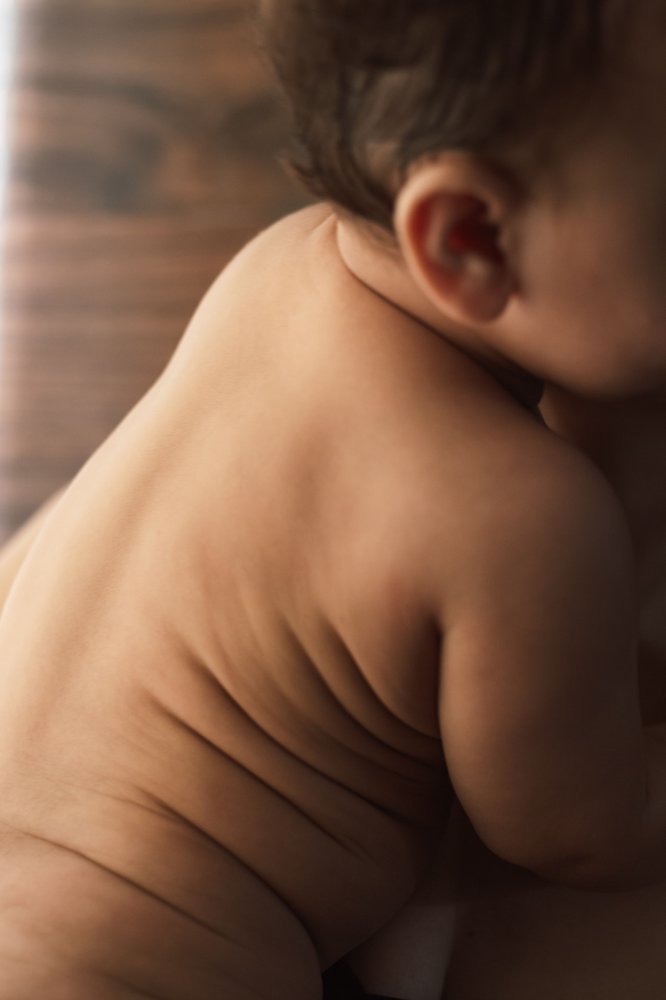

Les premiers mois de la vie sont marqués par de nombreux changements
pour le bébé : développement moteur, découverte de nouvelles
positions et adaptation progressive à son environnement. Il est donc
normal que les parents se posent de nombreuses questions lorsqu’ils
remarquent une asymétrie, une difficulté de mouvement ou une gêne
chez leur nourrisson.
Dans certaines situations, les parents peuvent se demander s’il est
pertinent de consulter un ostéopathe pour bébé. La
réponse dépend principalement du motif de consultation, de l’état de
santé de l’enfant et de la nécessité éventuelle d’un avis médical ou
d’une prise en charge spécialisée.

À retenir : une consultation d’ostéopathie chez un
nourrisson doit rester complémentaire du suivi médical et
pédiatrique. Lorsqu’un bébé présente un symptôme inhabituel,
important ou persistant, la priorité est d’obtenir l’avis du
professionnel de santé adapté.
Pourquoi consulter un ostéopathe pour bébé ?
Le nourrisson évolue rapidement au cours des premiers mois. Sa
mobilité, ses positions et ses capacités motrices changent
progressivement.
Certains parents consultent un ostéopathe lorsqu’ils observent une
préférence nette pour tourner la tête d’un côté, une asymétrie
posturale ou une difficulté dans certains mouvements.
L’objectif d’une consultation d’ostéopathie n’est pas de
diagnostiquer ou de traiter une maladie du nourrisson, mais
d’évaluer certaines gênes fonctionnelles lorsque la situation s’y
prête.
Chez un bébé, la prise en charge doit être particulièrement adaptée
à son âge, à son développement et à son état de santé.
Dans quels cas consulter un ostéopathe pour bébé ?
Il n’existe pas une liste de situations dans lesquelles tous les
bébés devraient consulter un ostéopathe. Une consultation peut
néanmoins être envisagée lorsqu’une gêne fonctionnelle ou une
asymétrie est observée et qu’elle mérite d’être évaluée.
Parmi les motifs qui peuvent amener les parents à rechercher un
ostéopathe pour nourrisson, on peut notamment
retrouver :
une préférence persistante pour tourner la tête du même côté ;
une difficulté apparente à mobiliser le cou ;
une asymétrie de position observée au quotidien ;
une gêne lors de certains changements de position ;
des tensions ou une raideur apparente qui interrogent les parents
;
une difficulté fonctionnelle observée dans les premiers mouvements
du bébé.
Dans tous les cas, le motif de consultation doit être replacé dans
le contexte général de santé et de développement de l’enfant.
Torticolis du bébé : quand consulter ?
Le torticolis du nourrisson peut se manifester par une position
préférentielle de la tête ou une limitation des mouvements du cou.
Les parents peuvent notamment remarquer que leur bébé regarde
davantage d’un côté.
Une limitation de la mobilité cervicale chez un nourrisson mérite
une évaluation adaptée. La Haute Autorité de Santé recommande, en
cas de torticolis postural ou musculaire, une orientation vers un
kinésithérapeute à orientation pédiatrique.
Une consultation d’ostéopathie ne doit donc pas se substituer à
cette prise en charge lorsqu’elle est indiquée. Une approche
complémentaire peut éventuellement être envisagée dans le cadre d’un
accompagnement adapté et pluridisciplinaire.
Plagiocéphalie et tête plate : faut-il consulter ?
La plagiocéphalie positionnelle correspond à un aplatissement d’une
partie du crâne du nourrisson. Elle peut notamment être favorisée
par une préférence positionnelle et une mobilité cervicale réduite.
Lorsque les parents constatent un aplatissement de la tête, il est
préférable d’en parler au professionnel de santé qui suit le bébé.
Une évaluation permet notamment de rechercher une éventuelle
limitation de la mobilité du cou.
La HAS recommande notamment des mesures de repositionnement et une
prise en charge en kinésithérapie en cas de défaut de mobilité
cervicale. Les recommandations de la HAS précisent actuellement que
les données scientifiques ne permettent pas de recommander
l’ostéopathie comme traitement de la déformation crânienne
positionnelle.
L’ostéopathie ne doit donc pas retarder l’évaluation médicale ou la
prise en charge recommandée.
Ostéopathe pour bébé et troubles digestifs : que sait-on ?
Les coliques, les régurgitations ou les troubles digestifs sont des
motifs fréquemment évoqués par les parents lorsqu’ils recherchent
une consultation pour leur bébé.
Il est toutefois important de ne pas présenter l’ostéopathie comme
un traitement démontré de ces troubles. Les données scientifiques
disponibles restent insuffisantes pour conclure à une efficacité de
l’ostéopathie dans les troubles digestifs du nourrisson.
En cas de régurgitations importantes, de difficultés alimentaires,
de vomissements inhabituels, de mauvaise prise de poids ou de
symptômes persistants, un avis médical ou pédiatrique doit être
privilégié.
Faut-il consulter un ostéopathe systématiquement après la naissance
?
Une consultation d’ostéopathie n’est pas systématique pour tous les
nouveau-nés. Un bébé qui va bien et dont le développement évolue
normalement n’a pas nécessairement besoin d’une séance d’ostéopathie
simplement parce qu’il vient de naître.
La priorité reste le suivi médical du nourrisson et les examens
prévus au cours des premiers mois.
Une consultation peut être envisagée lorsqu’un motif précis conduit
les parents ou un professionnel de santé à rechercher une évaluation
complémentaire.
Comment se déroule une séance d’ostéopathie pour bébé ?
Une consultation commence généralement par un échange avec les
parents. L’ostéopathe cherche notamment à comprendre le motif de
consultation, les habitudes du bébé, son développement et les
éléments importants de son contexte de santé.
Un bilan adapté à l’âge de l’enfant peut ensuite permettre
d’observer sa mobilité et ses réactions dans différentes positions.
Chez le nourrisson, la prise en charge doit rester douce,
progressive et adaptée. L’enfant n’est jamais considéré comme un
petit adulte : son âge, son développement et ses capacités motrices
sont pris en compte.
Si les observations réalisées pendant la consultation suggèrent
qu’un avis médical ou une autre prise en charge est nécessaire,
celle-ci doit être privilégiée.
Quelles précautions prendre avant de consulter un ostéopathe pour
bébé ?
Avant une consultation, il est utile de transmettre à l’ostéopathe
les informations importantes concernant la santé et le développement
du bébé.
Les parents peuvent notamment préciser :
l’âge du bébé ;
le motif précis de la consultation ;
les éventuels antécédents médicaux ;
les traitements ou prises en charge en cours ;
les observations faites au quotidien par les parents.
En cas de doute sur l’état de santé du nourrisson, il est préférable
de demander conseil au médecin, au pédiatre ou au professionnel de
santé qui suit l’enfant avant d’envisager une consultation
complémentaire.
Quand faut-il consulter rapidement un médecin pour son bébé ?
Une gêne chez un nourrisson ne doit pas systématiquement être
considérée comme un problème mécanique ou postural.
En présence d’un symptôme important, inhabituel ou brutal, d’une
difficulté respiratoire, d’un changement marqué du comportement,
d’une alimentation très perturbée, de vomissements inhabituels,
d’une fièvre ou de tout autre signe préoccupant, les parents doivent
rechercher un avis médical adapté à la situation.
L’ostéopathie ne doit jamais retarder une consultation médicale
lorsque celle-ci est nécessaire.
Quel peut être le rôle de l’ostéopathie chez le nourrisson ?
Lorsqu’une consultation est appropriée, l’ostéopathie peut
s’inscrire dans une approche complémentaire visant à observer
certaines gênes fonctionnelles et la mobilité du bébé.
Cette approche doit toujours tenir compte de l’âge de l’enfant, de
son développement et de son contexte médical.
Elle ne remplace ni les consultations pédiatriques, ni les examens
médicaux, ni les prises en charge spécialisées lorsque celles-ci
sont nécessaires.
À Bruges, Henrique Nunes propose des consultations d’ostéopathie
pour les nourrissons sur rendez-vous.
Une consultation d’ostéopathie peut être envisagée chez un
nourrisson dans certaines situations, après avoir pris en compte son
âge, son état de santé et le motif de consultation. Elle ne remplace
pas le suivi médical ou pédiatrique.
Quand consulter un ostéopathe pour bébé ?
Une consultation peut être envisagée lorsqu’un bébé présente une
gêne fonctionnelle ou une asymétrie posturale, par exemple une
difficulté à tourner la tête. En cas de symptôme inhabituel,
important ou inquiétant, un avis médical doit être privilégié.
Peut-on consulter un ostéopathe pour un torticolis chez le bébé ?
Un torticolis ou une limitation de mobilité du cou chez un
nourrisson nécessite une évaluation adaptée. La Haute Autorité de
Santé recommande une prise en charge en kinésithérapie à orientation
pédiatrique en cas de torticolis postural ou musculaire. Une
approche ostéopathique ne doit pas remplacer cette prise en charge.
L’ostéopathie peut-elle traiter les coliques du bébé ?
Les troubles digestifs peuvent conduire certains parents à
rechercher une consultation d’ostéopathie, mais les données
scientifiques disponibles ne permettent pas d’affirmer une
efficacité de l’ostéopathie dans ces situations. Un avis médical ou
pédiatrique est recommandé lorsque les symptômes sont importants ou
persistants.
L’ostéopathie peut-elle remplacer le pédiatre ?
Non. L’ostéopathie ne remplace pas le suivi médical du nourrisson.
Elle peut éventuellement intervenir en complément lorsqu’une
consultation est appropriée et qu’une cause médicale nécessitant une
prise en charge spécifique a été écartée.